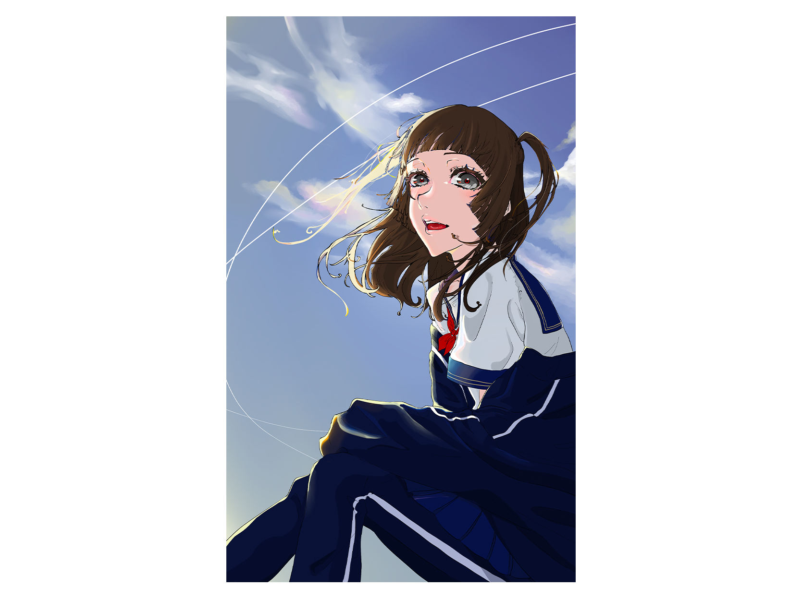

特定のイラストレーターの方の作風を分析し、再現する課題として制作。
使用技術
CLIP STUDIO PAINT
デザインについて
イラストレーターの作風を分析し色使いや線の表現、構図を再現する課題として制作しました。
普段の自分ではあまりしないような色使いや線の表現をすることができ、良い経験になりました。
光の入れ方や線の表現などをしっかり分析して再現することができたと思いますが、構図や服装などもう少し工夫できたのではないかと思います。
また、体のバランスに１番改善の余地があると思います。